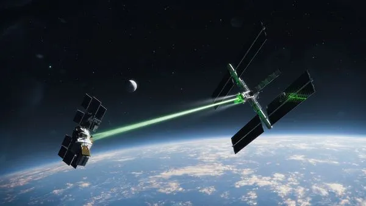

Posted 24h ago
An artist's illustration shows how an electrostatic tractor beam could be used
to pull
defunct satellites out of geostationary orbit around Earth. In reality, the
beam would be invisible
In science fiction films, nothing raises tension quite like the good guys' spaceship
getting caught
in an invisible tractor beam that allows the baddies to slowly reel
them in. But what was once only a
sci-fi staple could soon become a reality.
Scientists are developing a real-life tractor beam, dubbed an electrostatic tractor.
This tractor beam
wouldn't suck in helpless starship pilots, however. Instead, it would
use electrostatic attraction to
nudge hazardous space junk safely out of Earth orbit.
The stakes are high: With the commercial space industry booming, the number of
satellites in Earth's
orbit is forecast to rise sharply. This bonanza of new satellites
will eventually wear out and turn the
space around Earth into a giant junkyard of
debris that could smash into working spacecraft, plummet to
Earth, pollute our
atmosphere with metals and obscure our view of the cosmos. And, if left unchecked,
the growing space junk problem could hobble the booming space exploration industry,
experts warn.
The electrostatic tractor beam could potentially alleviate that problem by safely
moving dead satellites
far out of Earth orbit, where they would drift harmlessly for eternity.
While the tractor beam wouldn't completely solve the space junk problem, the concept
has several
advantages over other proposed space debris removal methods, which
could make it a valuable tool for
tackling the issue, experts told Live Science.